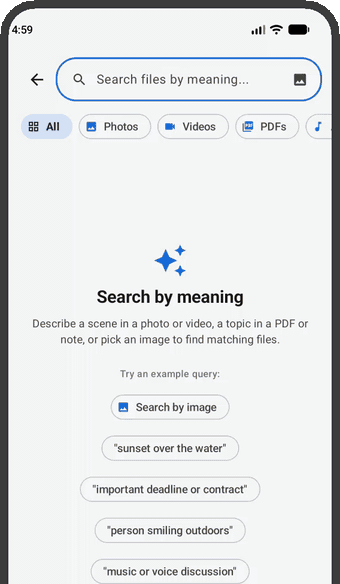

Describe it. Jump to it.
Type what you remember. LocalFind jumps straight to the right spot in your files.
big bird flying
A moment in a long videoJumps to 06:16 and starts playing.A sea captain trying to reach the North Pole
A page in a PDFOpens the book right at the matching page.I have a dream
A snippet in an audio recordingPlays the speech from the matching second.
Exact moments
Every result shows the time or page, and opens right there.
Search with a photo
Find similar photos and matching video scenes.
Everything in one box
Videos, photos, PDFs, audio and text files.
100+ languages
Search in the language you speak.
Fast on AI hardware
Quicker on phones with built-in AI hardware, and works on any modern phone.
Background indexing
Keeps going while you use other apps. Pause and resume any time.


Private by design
LocalFind works in airplane mode. It has no internet permission, no account, no ads and no tracking. Your files never leave your phone. Read the privacy policy.
Open source
LocalFind is free and open source under the Apache 2.0 license. The code is at github.com/bjdavey/localfind. To report a problem or suggest a feature, use the issue tracker.